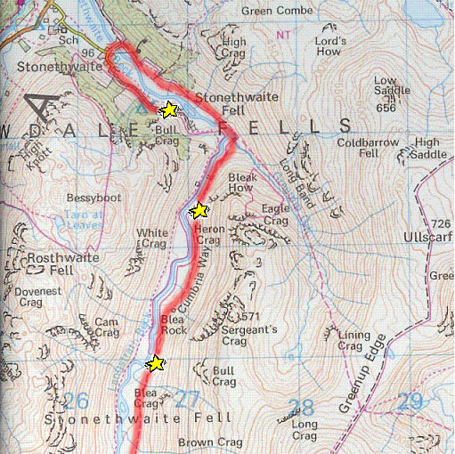
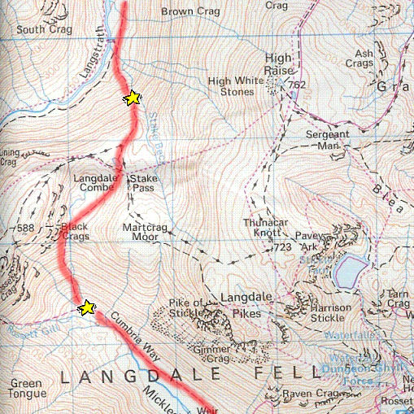
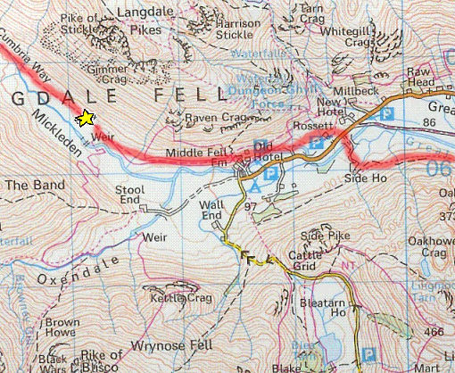
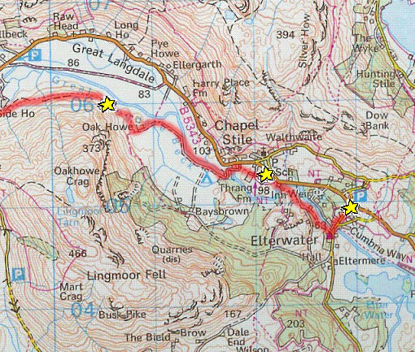

With the possibility of returning that day and also hastened by the intolerable midges, Day 4 was the only day we left before or on our predicted time. We retraced our final steps from Day 3 in the glorious sunshine until we could head south on the Cumbrian Way. The walking was, for the first time, due to the lack of rain, enjoyable and as one of the other groups had the same route as us, we walked together - so our morale was high.
The Cumbrian Way was one of the best paths we walked on and the valley floor was completely flat. We had plenty of time and this day was our easiest and shortest, all of which made the walk more fun.

Our solitary climb was actually quite steep but it didn't really affect us as all other circumstances were considerably better than before. After resting and almost going in the wrong direction at the top we made our way down the other side. This descent was very similar to the final one of Day 3 but because it had not rained we found it much easier.
At the bottom we rested as a factor that had not yet affected us, the heat, now hindered progress. Not for long though as we tried to make it before 1.00pm along the easiest terrain of the trip. We walked much quicker than before though the valley: at about 6kmph unlike our scheduled 3kmph.

We had lunch by the 'Old Hotel' which was for the first time pleasurable. On leaving we thought that we saw our minibus parked in the car park a way off but decided it couldn't be: however we later learned that had we gone to look closer we would have found that it was ours and that we needn't have walked the final 5km or so.
We crossed the river and climbed steeply for about 100m and then walked around the side of a mountain. Although the knowledge that we were so close spurred us on, as progress slowed it also got more frustrating that we had to keep going.

By now the only thing that seemed to matter was to get to the car park by 1.00pm but the path seemed to continually go on. When we did reach Elterwater we took a wrong turning and thought we wouldn't make it so we decided to run. Fortunately we did make it, although we were disappointed to here that it didn't matter because we weren't going home that day anyway.
Once we had finished relief poured over our bodies, having walked over 80km in 4 days. Later that night we found out that we had all passed and so that the expedition had been totally successful.